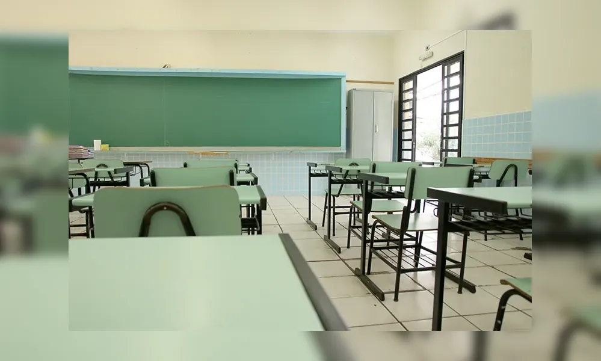

Dez mil candidatos devem realizar o concurso para professor em Londrina
Os candidatos inscritos no concurso público para Professor da Educação Básica, realizado pela Prefeitura de Londrina, farão provas objetiva, discursiva e de títulos no próximo domingo (27), a partir das 14h. O período de avaliações terá 5 horas de duração, indo até as 19h, com provas no campus da UEL (Universidade Estadual de Londrina) e outras instituições de ensino, como colégios estaduais e escolas municipais, totalizando 17 locais da área urbana
Ao todo, 10.423 pessoas estão habilitadas para realizar esta etapa do concurso. São professores de 332 cidades, de 22 estados, representando todas as regiões do Brasil . A secretária municipal de Recursos Humanos, Julliana Bellusci, disse que o volume de participantes superou as expectativas do Município, uma vez que a projeção era de cerca de 4.400.
“Esse cálculo obviamente tem oscilações, pois é baseado em concursos anteriores de cenários de outros períodos. Mas, normalmente, levamos em conta que os cargos que exigem formação em nível superior não comportam expectativas mais altas, tendo em vista o nível de especialização exigido. Acreditamos que vários fatores levam a isso, como o fato de que o Município de Londrina é acolhedor para se estabelecer e ter uma carreira, e também porque a administração tem propiciado boas condições de trabalho”, analisou.
"Nossa rede de educação tem uma boa fama e imagem, fornece boas condições de trabalho e remuneração, e Londrina é um lugar excelente para se viver. Tudo isso pesa para este número alto de concorrentes, e esperamos que o concurso tenha todas as suas próximas etapas concluídas com êxito”, completou secretária municipal de Educação, Maria Tereza